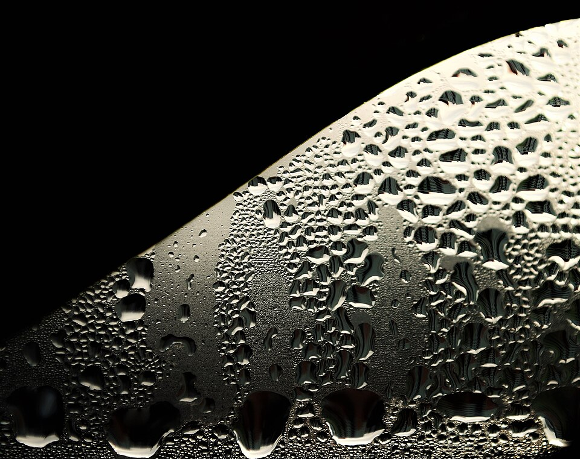
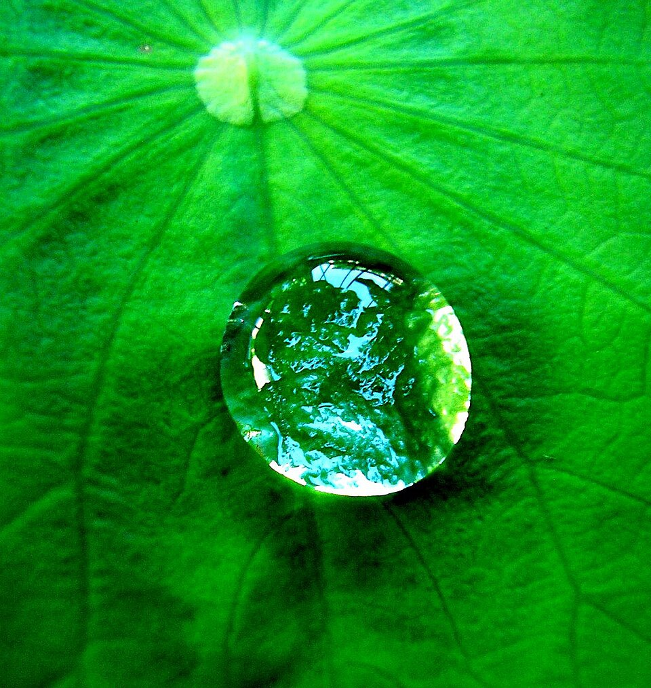

El ángulo que dice si un líquido moja o se hace bolita, y por qué las gotas se quedan pegadas al vidrio
¿Por qué el agua se hace bolitas sobre un auto encerado y se desparrama sobre la pintura sin cera? OpenStax lo explica así: la adhesión entre el agua y la cera es mucho menor que entre el agua y la pintura [1]. Mirá también el borde de un vaso de agua: el líquido sube un poco por el vidrio y forma una curva. Esa curva es el menisco, y el ángulo con que el líquido toca la pared dice cuánto lo moja.
El ángulo de contacto θ es el ángulo entre la superficie del líquido y la superficie del sólido, en el borde donde se tocan [1]. Está directamente relacionado con la competencia entre cohesión y adhesión: cuanto más fuerte es la cohesión del líquido frente a su adhesión al sólido, más grande es θ y más tiende el líquido a hacerse gota [1]. OpenStax da algunos valores [1]:
Según Bush, del MIT, un líquido moja un sólido cuando θ es menor que 90° y lo moja poco cuando es mayor. Para el agua, una superficie es hidrofílica si θ < 90°, hidrofóbica si θ > 90° y superhidrofóbica si θ supera los 150° [2]. Por eso el menisco del agua en el vidrio es cóncavo, y el del mercurio, convexo: el agua sube por la pared y el mercurio se aleja de ella [1].
Hay tres superficies que se encuentran en el borde de una gota: líquido–aire, sólido–líquido y sólido–aire. Cada una tiene su propia tensión, es decir, su propia energía por unidad de área [2]. En el borde, las tres tiran en direcciones distintas, y la gota se queda quieta cuando las fuerzas horizontales se equilibran. De ese balance sale la ley de Young [2]:
Thomas Young publicó su ensayo sobre la cohesión de los fluidos en 1805 [3]. Bush recuerda que de las tres tensiones solo γLV se puede medir con facilidad [2]. Y agrega un caso extremo: si el sólido «prefiere» estar mojado, el líquido se extiende por completo y no hay ángulo de contacto; pasa, por ejemplo, con el agua sobre vidrio limpio [2].
La cinchada en el borde: imaginá tres equipos que tiran de una soga atada en el borde de la gota. El sólido seco tira hacia afuera, para que la gota lo cubra; la interfaz sólido–líquido tira hacia adentro; y la superficie de la gota tira inclinada, según el ángulo θ. La gota se acomoda en el ángulo justo para que nadie gane la cinchada.
Si el ángulo de contacto fuera único, una gota sobre un vidrio inclinado no tendría nada que la sostenga. Pero en las superficies reales no lo es. Según Bush, para un sólido y un líquido dados hay un rango de ángulos posibles: entre un ángulo de retroceso y uno de avance [2]. Si se infla una gota despacio con una jeringa, θ crece hasta llegar al ángulo de avance y recién entonces el borde avanza; si se la vacía, θ baja hasta el de retroceso y recién ahí el borde retrocede [2]. Esa diferencia se llama histéresis del ángulo de contacto.
Su origen son las imperfecciones de la superficie, químicas o de textura, que «anclan» el borde de la gota y le ponen una barrera energética a su movimiento [2]. Por eso una gota de lluvia puede quedarse quieta en el vidrio de una ventana: adelante el ángulo puede llegar al de avance y atrás bajar al de retroceso, y esa diferencia da una fuerza capilar que sostiene su peso [2]. Las gotas crecen juntando otras hasta que pesan demasiado y, entonces, ruedan [2].


Rugosidad y mojabilidad: Bush muestra que la rugosidad amplifica la tendencia natural de un sólido: una superficie hidrofílica se vuelve más hidrofílica al rugosearla, y una hidrofóbica, más hidrofóbica [2]. Llevada al extremo, con aire atrapado entre las rugosidades, esa idea explica el efecto loto.
El ángulo de contacto resume en un solo número una competencia molecular: cuánto se atrae el líquido a sí mismo y cuánto al sólido. La ecuación de Young lo calcula con las tres tensiones del borde. Y la histéresis explica algo que vemos todos los días de lluvia: gotas quietas en un vidrio inclinado, que no se caen hasta que crecen lo suficiente.
Pregunta para la comunidad: Según la tabla de OpenStax, el agua toca la plata con un ángulo de 90°. ¿Qué forma tendría el menisco del agua en un tubo de plata? ¿Subiría, bajaría o se quedaría al mismo nivel que afuera?